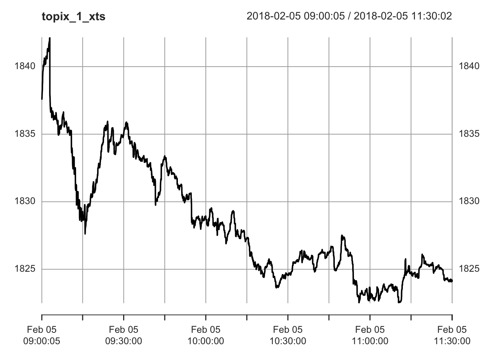
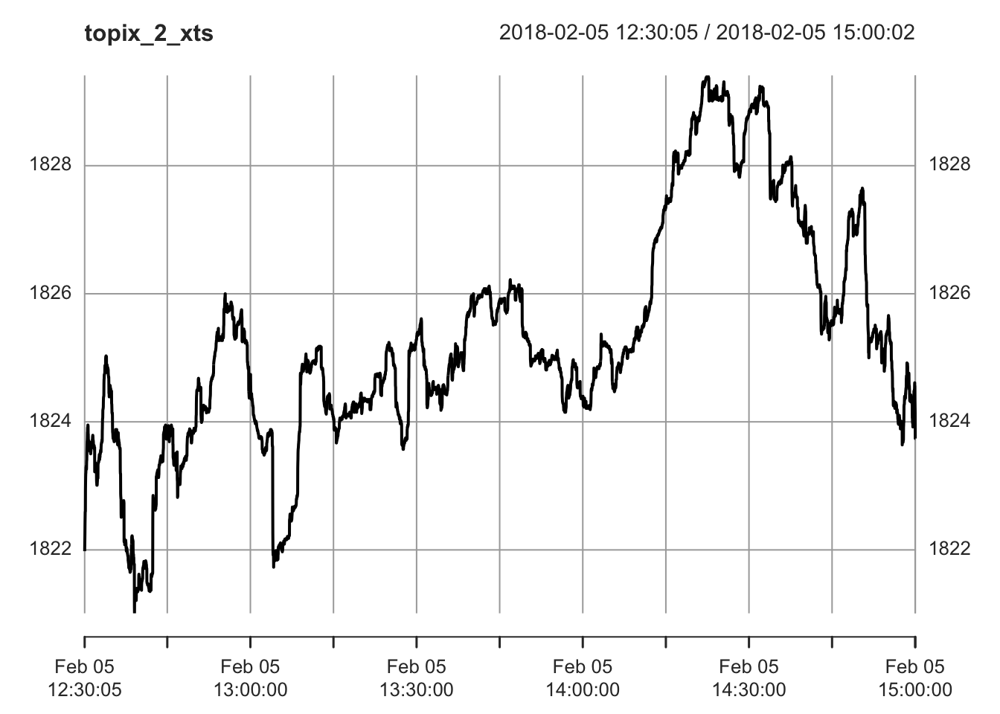
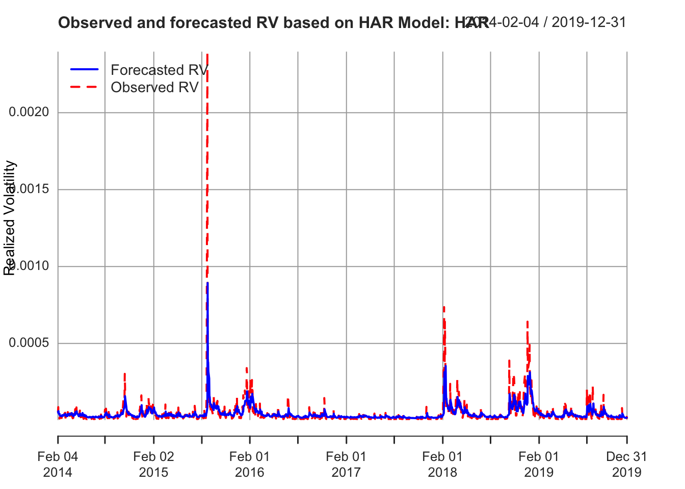
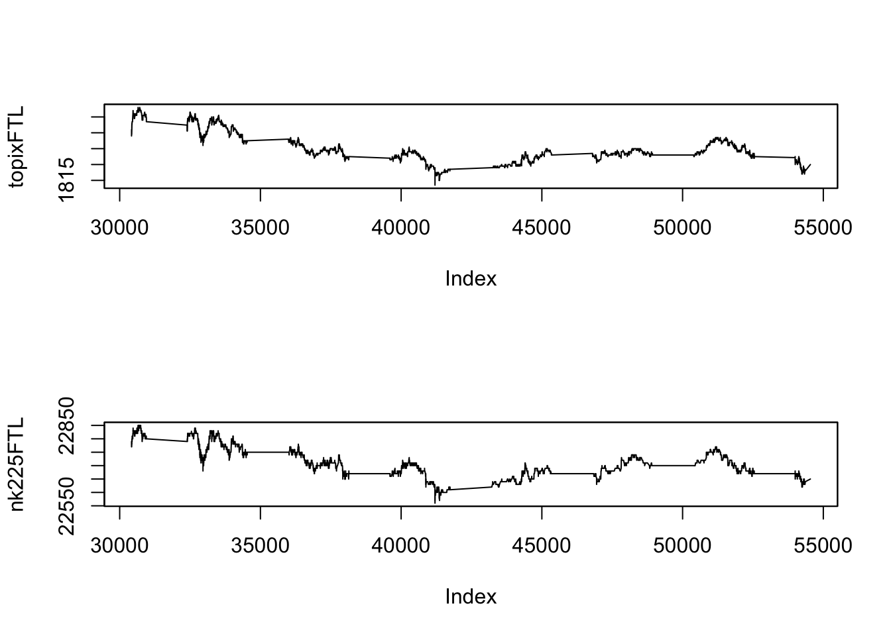
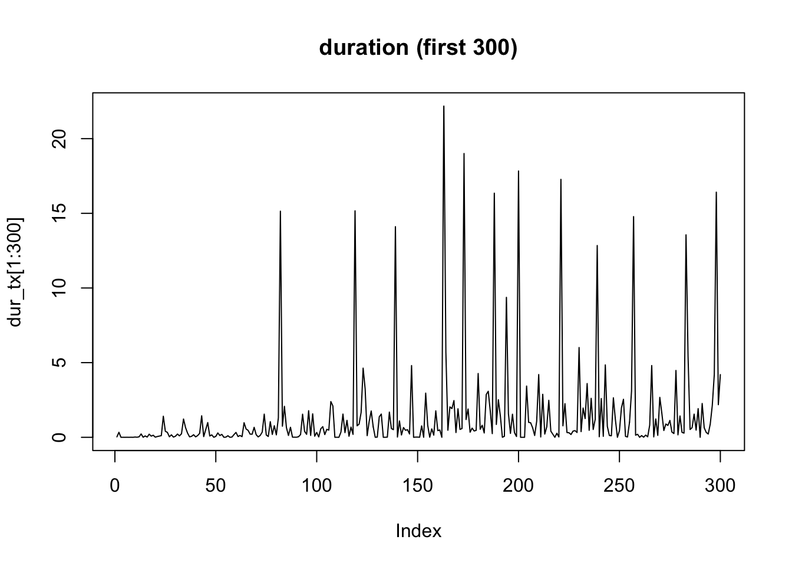

13 高頻度データ分析
1日内の取引の記録を収録したデータである 「高頻度データ」を分析するためには, それに先立つ適切な前処理の実施や そのためのコーディングなど, 分析に要する工数が 通常の日次以上のサンプリング頻度 and/or 等間隔データに 比べて多い.
特に, タイムスタンプ非同期性等に対する対応をする場合には, 前処理が面倒となる.
高頻度データは, zoo and/or xtsパッケージを使って, 時系列データをzooやxtsクラスのオブジェクトに変換して分析する.
なお, データ処理段階でミリ秒以上の精度が必要の場合, xtsの他, data.table の fasttime 機能, パッケージnanotimeを使う等の方法あり.
13.1 ボラティリティ推定
一日内の取引データ (高頻度データ) を使って, 日次ボラティリティを推定したい.
データセット1: TOPIX指数データ
1日分 (2018年2月5日), 1秒間隔の東証株価指数 (TOPIX) データ
データセット1: TOPIX指数データ
- 2018年2月5日前場・後場. 1秒間隔
- 各8998件 (共通)
- 9:00:05 -- 11:30:02, 12:30:05--15:00:02.
require(zoo)
idir <- file.path("./")
# TOPIX指数
ifl1 <- file.path(idir, "topix1s_20180205_1.csv")
topix1s_1 <- read.csv(ifl1)
ifl2 <- file.path(idir, "topix1s_20180205_2.csv")
topix1s_2 <- read.csv(ifl2)
# zooクラスに変換
# 注) 日付情報を加えない
topix_1_zoo <- zoo(topix1s_1$price, topix1s_1$sec)
topix_2_zoo <- zoo(topix1s_2$price, topix1s_2$sec)
par(mfrow=c(1,2))
plot(topix_1_zoo, xlab = "sec", ylab = "TOPIX")
plot(topix_2_zoo, xlab = "sec", ylab = "TOPIX")
株価指数そのものは取引されていないが, 現実に取引されている証券の高頻度データを使ってボラティリティを推定する場合には, マイクロストラクチャノイズに対する対応が必要となる. 簡便法としては, 実現ボラティリティの代わりに始値と終値のみや, 四本値のみを使う推定法 (例, Parkinsonボラティリティ) を用いる, 実現ボラティリティの計算に 用いる取引データの間隔を間引き (5分間隔程度) するやり方がある. さらには, 実現ボラティリティを改良し, マイクロストラクチャノイズに対応したより”精緻な”推定法が 数多く提案されている. これらは, yuimaパッケージの中で cce()関数として実装されている (以下の「共分散・相関の推定」パート参照).
実現ボラティリティの計算
真の価格系列が連続時間の拡散過程 (伊藤過程) に従っていて それが離散時間で観測されていると仮定.
価格系列を使用した自作関数の例.
# 実現ボラティリティの計算
# 分散ではなく標準偏差表示. 年率換算せず
# 全ティック (prcvec全体を使用, 間引きせず)
# prcvec: (対数を取る前の) 価格系列
calc_RV <- function(prcvec, dgts = 6){
prcvec2 <- na.omit(prcvec)
if(length(prcvec2) == 0 || any(prcvec <= 0)) return(NA) # -Infを回避
rv <- sum(diff(log(prcvec2))^2) ** 0.5
return(round(rv, dgts))
}
calc_RV(topix_1_zoo)
#> [1] 0.004188
calc_RV(topix_2_zoo)
#> [1] 0.002204
# 以下も結果は同一
# calc_RV(topix1s_1$price)
# calc_RV(topix1s_2$price)Parkinsonボラティリティの計算
# Parkionsonボラティリティの計算
# 分散ではなく標準偏差表示. 年率換算せず
calc_vParkinson <- function(prcvec, freq = 1){
prcvec2 <- na.omit(prcvec)
if(length(prcvec2) == 0) return(NA) # -Infを回避
LH <- range(prcvec2)
if (LH[1] * LH[2] <= 0) return(F)
vola <- abs(log(LH[2] / LH[1])) / sqrt(4 * freq * log(2))
return(vola)
}
calc_vParkinson(topix_1_zoo)
#> [1] 0.006450344
calc_vParkinson(topix_2_zoo)
#> [1] 0.002763914
# 以下も結果は同一
# calc_vParkinson(topix1s_1$price)
# calc_vParkinson(topix1s_2$price)calc_RV()は全データセット (価格, あるいは対数収益率) を
使用してRVを計算する仕様となっている.
もし, RVを5分間隔データに基づいて計算する場合には,
あらかじめ, 5分間隔にサブサンプル (“間引き”) しておく必要がある.
ここでは, タイムスタンプに日付情報を追加しておくやり方を示す.
# 等間隔に"間引き"
library(lubridate) # ymd_hms
library(xts) # last
ymdhms_vec <- ymd_hms(paste("2018-02-05", hms::as_hms(index(topix_1_zoo))))
topix_1_zoo2 <- zoo(topix_1_zoo, order.by = ymdhms_vec)
ymdhms_vec <- ymd_hms(paste("2018-02-05", hms::as_hms(index(topix_2_zoo))))
topix_2_zoo2 <- zoo(topix_2_zoo, order.by = ymdhms_vec)
# aggregate()を使うやり方
# グリッド点は, データの開始時点から5分間隔に (秒以下は丸めて) 取る
reg_grid <- function(x_zoo, interval = "5 min"){
aggregate(x = x_zoo,
by = function(tt) as.POSIXct(cut(tt, interval)),
FUN = last # mean # tail, 1
)
}
topix_5m_zoo2 <- reg_grid(topix_1_zoo2, "5 min")
topix_3m_zoo2 <- reg_grid(topix_1_zoo2, "3 min")
topix_1m_zoo2 <- reg_grid(topix_1_zoo2, "1 min")それぞれ, 5分, 3分, 1分間隔RVの計算:
calc_RV(topix_5m_zoo2) # ** 2
#> [1] 0.005457
calc_RV(topix_3m_zoo2) # ** 2
#> [1] 0.006226
calc_RV(topix_1m_zoo2) # ** 2
#> [1] 0.005988次に, パッケージhighfrequencyを利用して, RVを計算する.
rRVar: 実現分散の計算
- Usage: rRVar(rData, alignBy = NULL, alignPeriod = NULL, makeReturns = FALSE, ...)
- rData: xts or data.tableオブジェクト. 収益率 or 価格. 複数資産・複数日OK
- alignBy: alignPeriodの表示の時間スケール: "ticks", "secs", "seconds", "mins", "minutes", "hours"
- alignPeriod: 時間集約 (合算) する区間数
- makeReturns: rDataが価格の場合はTRUEに設定 (デフォルトはF)上でみたように, topix_1_zoo, topix_2_zooは1秒間隔で収録されている.
上でzooクラスに変換した際に, 日付情報を付与しなかった.
一方, 取引日のタイムスタンプはintegerで保持していた (深夜0時を起点として各時刻を秒表示).
パッケージhighfrequencyを使用するにあたり, 時系列データをxts型オブジェクトに変換しておく.
library(xts)
# library(lubridate) # ymd_hms
ymdhms_vec <- ymd_hms(paste("2018-02-05", hms::as_hms(index(topix_1_zoo))))
topix_1_xts <- xts(topix_1_zoo, order.by = ymdhms_vec)
ymdhms_vec <- ymd_hms(paste("2018-02-05", hms::as_hms(index(topix_2_zoo))))
topix_2_xts <- xts(topix_2_zoo, order.by = ymdhms_vec)
plot(topix_1_xts)

library(highfrequency)
# 価格系列を使用 --> makeReturns=Tを選択する必要
# 5分間隔 (300s) RV
rRVar(topix_1_xts, alignBy = "secs", alignPeriod = 300, makeReturns = T)
#> x
#> 3.024702e-05
rRVar(topix_2_xts, alignBy = "secs", alignPeriod = 300, makeReturns = T)
#> x
#> 1.855628e-05
# 同一
# rRVar(topix_1_xts, alignBy = "mins", alignPeriod = 5, makeReturns = T)
# rRVar(topix_2_xts, alignBy = "mins", alignPeriod = 5, makeReturns = T)
# 1分間隔 (60s) RV
rRVar(topix_1_xts, alignBy = "secs", alignPeriod = 60, makeReturns = T)
#> x
#> 3.910369e-05
# rRVar(topix_2_xts, alignBy = "secs", alignPeriod = 60, makeReturns = T)
# 1秒間隔 (間引きなし) RV
rRVar(topix_1_xts, makeReturns = T)
#> x
#> 1.753612e-05
# rRVar(topix_2_xts, makeReturns = T)なお, 価格系列の代わりに, 収益率系列を使用することも可能.
この場合には, makeReturns=Fを選択する必要がある.
HAR-RVモデルによる予測
HAR-RVモデルは, 日次RV時系列の示す長期記憶性をうまく近似し, ボラティリティ予測性能が高いとされるモデルである. highfrequencyパッケージの関数HARmodel()により, HARモデルの推定, ボラティリティの予測が可能である. パラメータ指定により, HARモデルのバリエーションの指定や, 説明変数に使う日次・週次・月次の合算日数の変更, RV以外の有用な実現測度 (realized measures) の推定・予測も可能である. ジャンプ検定も可能である.
HARmodel(): HARモデルの推定. 過去の高頻度データより1日先のボラティリティ予測
- usage: HARmodel(
data, # xtsオブジェクト. 日内対数収益率, または計算済の実現測度 (realized measures)
periods = c(1, 5, 22), # 実現測度の合算 (集約) 日数のベクトル (1 day, 1 week, 1 monthに対応)
periodsJ = c(1, 5, 22), # ジャンプ項の合算日数のベクトル
periodsQ = c(1), # 実現4乗量 (quarticity) の合算日数のベクトル
leverage = NULL, # 負の収益率を合算する日数のベクトル
RVest = c("rCov", "rBPCov", "rQuar"), # 出力の種類: デフォルトは, 日次累積分散 (ジャンプ-robust), 実現bi-power変動, 実現4乗量. それ以外の指定はマニュアルを見よ.
inputType = "RM", # 入力dataの形式]: realized measure (デフォルト). それ以外は, 収益率
jumpTest = "ABDJumptest", # ジャンプ検定
alpha = 0.05, # ジャンプ検定の有意水準
h = 1, # 従属変数を合算する日数
transform = NULL, # 従属変数や説明変数を(同時に)変換する関数. 典型例, "log", "sqrt"
externalRegressor = NULL, # 外部説明変数
periodsExternal = c(1), # 外部説明変数を合算する日数
...以下では, highfrequencyに収録されているデータセットSPYRMを使用する.
これは, S&P500 (SPY) ETFの各種の実現測度 (realized measures) が
1分および5分間隔データを使って計算された日次時系列データセットである
# library(highfrequency)
# library(xts)
# Forecasting daily Realized volatility for the S&P 500 using the basic HARmodel: HAR
str(SPYRM) # S&P500 (SPY) ETFの各種実現測度 (１分, 5分)
#> Classes 'data.table' and 'data.frame': 1495 obs. of 14 variables:
#> $ DT : Date, format: "2014-01-02" "2014-01-03" ...
#> $ RV1 : num 2.68e-05 1.58e-05 2.72e-05 1.08e-05 3.11e-05 ...
#> $ RV5 : num 2.57e-05 1.78e-05 2.56e-05 9.95e-06 2.68e-05 ...
#> $ BPV1 : num 2.54e-05 1.55e-05 2.18e-05 1.00e-05 2.58e-05 ...
#> $ BPV5 : num 2.37e-05 1.67e-05 1.89e-05 9.75e-06 2.35e-05 ...
#> $ medRV1: num 2.45e-05 1.54e-05 2.24e-05 1.06e-05 2.64e-05 ...
#> $ medRV5: num 1.93e-05 1.63e-05 1.64e-05 9.32e-06 2.32e-05 ...
#> $ RK1 : num 2.59e-05 1.60e-05 3.20e-05 9.42e-06 1.98e-05 ...
#> $ RK5 : num 2.64e-05 1.63e-05 2.59e-05 9.96e-06 1.94e-05 ...
#> $ RQ1 : num 0.0534 0.0302 0.0621 0.0213 0.0889 ...
#> $ RQ5 : num 0.0543 0.0304 0.05 0.017 0.0538 ...
#> $ medRQ1: num 0.0473 0.0296 0.0419 0.0207 0.0823 ...
#> $ medRQ5: num 0.0473 0.0296 0.0419 0.0207 0.0823 ...
#> $ CLOSE : num 183 183 182 183 184 ...
#> - attr(*, ".internal.selfref")=<externalptr>
#> - attr(*, "sorted")= chr "DT"
RVSPY <- as.xts(SPYRM$RV5, order.by = SPYRM$DT)
x <- highfrequency::HARmodel(data = RVSPY,
periods = c(1,5,22),
RVest = c("rCov"),
type = "HAR",
h = 1,
transform = NULL,
inputType = "RM")
class(x)
#> [1] "HARmodel" "lm"
plot(x)
HARモデルの適合 (推定) と予測の例.
# Estimate the HAR model of type HARQ
dat <- as.xts(sampleOneMinuteData[, makeReturns(STOCK), by = list(DATE = as.Date(DT))])
x <- highfrequency::HARmodel(dat,
periods = c(1,5,10),
periodsJ = c(1,5,10),
periodsQ = c(1),
RVest = c("rCov", "rQuar"),
type="HARQ",
inputType = "returns")
class(x)
#> [1] "HARmodel" "lm"
x
#>
#> Model:
#> RV1 = beta0 + beta1 * RV1 + beta2 * RV5 + beta3 * RV10 + beta4 * RQ1
#>
#> Coefficients:
#> beta0 beta1 beta2 beta3 beta4
#> 7.046e-05 -1.545e-01 1.686e-01 3.025e-01 1.023e+03
#> Newey-West Standard Errors:
#> beta0 beta1 beta2 beta3 beta4
#> 1.471e-05 9.588e-02 1.061e-01 9.461e-02 2.886e+02
#>
#>
#> r.squared adj.r.squared
#> 0.6944 0.5198
plot(x)
13.2 共分散・相関の推定
2つの証券の一日内の取引データを使って, 両者の共分散や相関係数を推定したい. しかし, 個別取引のデータは等間隔に並んでないことから, データが同時観測されていない (非同期) 点を考慮する必要がある. 上記, highfrequencyパッケージの他, yuimaパッケージも利用可能である.
データセット2: 株価指数先物データ
データセット2: 株価指数先物データ
- データ日付: 2018年2月5日
- TOPIXおよび, 日経平均のそれぞれの株価指数先物データ (中心限月, ラージサイズ)
- ティックデータ
- 時間解像度: 1ミリ秒同時点タイムスタンプを持つ複数レコードが存在するため, ここでは, 1タイムスタンプ1レコードに集約する (集約の際の価格は単純平均を使用).
library(yuima)
yyyymmdd <- 20180205
ifl1_0 <- paste0("TXFTL-", yyyymmdd, "-D.csv")
ifl1 <- file.path(idir, ifl1_0)
txftl <- read.csv(ifl1, header = F)
ifl2_0 <- paste0("NKFTL-", yyyymmdd, "-D.csv")
ifl2 <- file.path(idir, ifl2_0)
nkftl <- read.csv(ifl2, header = F)
# zooクラス化
tx_zoo <- zoo(txftl$V2, txftl$V1 / 1000) # Warning: uniqueでない
nk_zoo <- zoo(nkftl$V2, nkftl$V1 / 1000)
# 1タイムスタンプ1レコード化
topixFTL <- aggregate(tx_zoo, index(tx_zoo), mean) # unique timestamp
nk225FTL <- aggregate(nk_zoo, index(nk_zoo), mean) # unique timestamp
#
par(mfrow = c(2,1))
plot(topixFTL)
plot(nk225FTL)
# 対数収益率化
topixFTL_ret <- diff(log(topixFTL))
nk225FTL_ret <- diff(log(nk225FTL))
# 関数に入力する系列が, 価格か対数収益率かに注意すること- 高頻度の価格時系列データの特徴 (stylized facts)
- ティック単位での動きが観察される
- 値段が動かない時間も散発的に発生
- ジャンプ?
- (ティックデータの場合) 1変量は非等間隔観察. 2変量間では非同期観察
- → “連続拡散過程”の実現値の特徴から乖離
- “マーケット・マイクロストラクチャ・ノイズ”への対応
- ジャンプへの対応
共分散・相関の推定
highfrequencyのrCov()を利用して
実現共分散・実現相関を計算する.
rCov()の使用に先立ち, 2銘柄のタイムスタンプの同期化が必要である.
refreshTime(): 非同期時系列の, リフレッシュ・タイムによるタイムスタンプの同期化
- usage: refreshTime(pData, sort = FALSE, criterion = "squared duration")
- pData: xts or data.tableオブジェクト (1列はDT (datetime)). 1日のみ. 典型的には価格系列
- sort: criterionによりインデックスを降順にソート (デフォルトはF)
- criterion: 使用する規準, "squared duration"(デフォルト), "duration"tx_zoo <- zoo(txftl$V2, txftl$V1 / 1000) # Warning: uniqueでない
nk_zoo <- zoo(nkftl$V2, nkftl$V1 / 1000)
# 時系列のxtsオブジェクト化
# library(lubridate) # ymd_hms
ymdhms_vec <- ymd_hms(paste("2018-02-05", hms::as_hms(index(tx_zoo))))
tx_xts <- xts(tx_zoo, order.by = ymdhms_vec)
ymdhms_vec <- ymd_hms(paste("2018-02-05", hms::as_hms(index(nk_zoo))))
nk_xts <- xts(nk_zoo, order.by = ymdhms_vec)
# refresh timeによる同期化
tx_nk_sync <- refreshTime(list(tx_xts, nk_xts))
# rRVar(tx_nk_sync) # 各RVの計算rCov(): 実現共分散・実現相関の計算
- rData: xts or data.tableオブジェクト. 収益率 or 価格. 複数資産・複数日OK
- cor: 相関はT, 共分散はF (デフォルト)
- alignBy: alignPeriodの表示の時間スケール: "ticks", "secs", "seconds", "mins", "minutes", "hours"
- alignPeriod: 時間集約 (合算) する区間数
- makeReturns: rDataが価格の場合はTRUEに設定 (デフォルトはF)# 5分間隔
# rCov(tx_nk_sync, cor = T, alignBy = "secs", alignPeriod = 300,
# makeReturns = T) # 相関
rCov(tx_nk_sync, cor = T, alignBy = "minutes", alignPeriod = 5,
makeReturns = T) # 相関
#> [,1] [,2]
#> [1,] 1.0000000 0.9020108
#> [2,] 0.9020108 1.0000000
# 1分間隔
# rCov(tx_nk_sync, cor = T, alignBy = "secs", alignPeriod = 60,
# makeReturns = T) # 相関
rCov(tx_nk_sync, cor = T, alignBy = "minutes", alignPeriod = 1,
makeReturns = T) # 相関
#> [,1] [,2]
#> [1,] 1.0000000 0.8546437
#> [2,] 0.8546437 1.0000000
# 全ティック使用
# rCov(tx_nk_sync, makeReturns = T) # 共分散
rCov(tx_nk_sync, cor = T, makeReturns = T) # 相関
#> [,1] [,2]
#> [1,] 1.0000000 0.2355344
#> [2,] 0.2355344 1.0000000
# --> Epps効果全般に, 5分間隔, 1分間隔, 全ティック使用と高頻度になるにつれて 相関係数の値が小さくなっていく傾向が観察される (Epps効果).
マイクロストラクチャ・ノイズを除去するための様々な 推定法が提案されている. いくつかを取り上げて計算してみる.
rMRCov: Modulated realized covariance (Hautsch and Podolskij(2013)
- プレ・アベレージ (pre-averaging) を用いる推定法
- pairwise: refresh timesが資産ペアに基づいている場合はT. デフォルトはF
- makePsd: 正定値バージョンはT. デフォルトはF
- theta: preaveragingの区間幅. デフォルトは0.8
- crossAssetNoiseCorrection: 非対角成分 (共分散) のバイアス修正するか. デフォルトはF
注) 間引きせず全データ使用 (preaveraing)rTSCov: Two time scale covariance estimation (ZMA(05), Zhang(10))
注) 間引きせず全データ使用 (preaveraing)
- K = 300
- J = 1
- makePsd: 正定値バージョンはT. デフォルトはFrTSCov(list(tx_nk_sync[, 1], tx_nk_sync[, 2]), cor = T)
#> [,1] [,2]
#> [1,] 1.0000000 0.9878281
#> [2,] 0.9878281 1.0000000
# topix2_xts <- merge(topix_1_xts, topix_2_xts, all = T)Hayashi-Yoshida共分散推定量
タイムスタンプの同期化が不要な推定法.
highfrequencyの関数rHYCov()を使用する.
highfrequency::rHYCov(): Hayashi-Yoshida共分散推定量の計算
- 用法:
rHYCov(
rData,
cor = FALSE,
period = 1,
alignBy = "seconds",
alignPeriod = 1,
makeReturns = FALSE,
makePsd = TRUE,
...
)
- rData: (複数日・複数銘柄の) 収益率または価格系列 (xts, またはdata.frame)
- cor: 返す値は, 相関か共分散か
- period: サンプル期間
- alignBy: alignPeriodの時間スケール. "ticks", "secs", "seconds", "mins", "minutes", "hours"
- alignPeriod: 合算する期間長. 例えば, alighnPeriod = 5, alighBy = "mins"なら５分間隔に集約
- makeReturns: 収益率に変換するか. rDataが価格系列ならTを指定のこと. デフォルトはF
- makePsd: Tならば, 正定値行列に修正. デフォルトはF rHYCov()を実行する場合には, あらかじめ異なるタイムスタンプを持つ非同期のxtsオブジェクトを一つ (共通のタイムスタンプを持つ) オブジェクトにマージしておく必要. xtsは日付/時間のクラス (POSIXct等) に変換しておいたタイムスタンプをorder.byで指定する必要.
非同期な状態のまま2つの時系列はマージされるため, 各タイムスタンプにおいて, 一方の資産の価格にNAが入る可能性がある.
価格系列ではなく, 収益率系列を使用する場合. 同時点タイムスタンプの複数レコードを1レコードに集約する 必要がある. ここでは, 平均値を使用し, 1タイムスタンプ1レコード化する.
# 収益率系列を使用する場合
# 前処理: 同時点タイムスタンプの複数レコードを
# 1レコードに集約. 価格は平均値使用
# 1タイムスタンプ1レコード化
topixFTL <- aggregate(tx_zoo, index(tx_zoo), mean) # unique timestamp
nk225FTL <- aggregate(nk_zoo, index(nk_zoo), mean) # unique timestamp
par(mfrow=c(2, 1))
plot(topixFTL)
plot(nk225FTL)
# 対数収益率化
topixFTL_ret <- diff(log(topixFTL))
nk225FTL_ret <- diff(log(nk225FTL))
# 関数に入力する系列が, 価格か対数収益率かに注意すること
# マージ
ftl2_zoo <- merge(topixFTL_ret, nk225FTL_ret, all = T)
# xts化
# library(lubridate) # ymd_hms
ymdhms_vec <- ymd_hms(paste("2018-02-05", hms::as_hms(index(ftl2_zoo))))
ftl2_xts <- xts(ftl2_zoo, order.by = ymdhms_vec)# HY推定量の計算
rHYCov(ftl2_xts, cor = T, period = 5,
alignBy = "minutes", alignPeriod = 5,
makeReturns = F)
#> [,1] [,2]
#> [1,] 1.000000 0.160519
#> [2,] 0.160519 1.000000highfrequencyのrCov()やrHYCov()の代替的関数としてyuima
のcce()を使うこともできる.
cce()は, 高頻度データより累積共分散・相関を推定するための万能な関数であり,
- 1変量, 2変量の両方に対応 (1変量 → 累積分散推定)
- 主要な推定量を広くカバー
- 非同期データにも対応. refresh timeを使う同期化もサポート
yuima::cce: (非同期なタイムスタンプを持つ) 伊藤過程間の共分散を推定
- 用法:
cce(x, method="HY", theta, kn, g=function(x)min(x,1-x), refreshing = TRUE,
cwise = TRUE, delta = 0, adj = TRUE, K, c.two, J = 1, c.multi, kernel, H,
c.RK, eta = 3/5, m = 2, ftregion = 0, vol.init = NA,
covol.init = NA, nvar.init = NA, ncov.init = NA, mn, alpha = 0.4,
frequency = 300, avg = TRUE, threshold, utime, psd = FALSE)
- 詳細はマニュアル参照のこと
- 一変量の時系列データを引数xに指定すれば, ボラティリティを推定することができる.
# cf. https://cran.r-project.org/web/packages/yuima/yuima.pdf- 注) 執筆時点でのsetData()の仕様に基づいたコード (変更される可能性)
# Hayashi-Yoshida estimator; Hayashi and Yoshida (2005)
yuima::cce(eval(ft2)) # the Hayashi-Yoshida estimator; Hayashi and Yoshida (2005)
#> $covmat
#> [,1] [,2]
#> [1,] 5.141391e-04 2.891806e-05
#> [2,] 2.891806e-05 8.303162e-04
#>
#> $cormat
#> [,1] [,2]
#> [1,] 1.00000000 0.04425956
#> [2,] 0.04425956 1.00000000Hayashi-Yoshida推定量は, マイクロストラクチャ・ノイズに対応しないことから,
代替的な累積共分散推定法が提案されている. cce()は主要な推定法を
カバーしている.
注) yuimaの仕様変更により, cce()の引数の与え方や結果の取り出し方が
変わっている可能性がある.
# the Pre-averaged Hayashi-Yoshida estimator; Christensen et al. (2010)
yuima::cce(eval(ft2), method = "PHY") #
#> $covmat
#> [,1] [,2]
#> [1,] 1.594766e-08 3.374205e-07
#> [2,] 3.374205e-07 -8.806117e-09
#>
#> $cormat
#> [,1] [,2]
#> [1,] 1 NaN
#> [2,] NaN 1
yuima::cce(eval(ft2), method = "PHY", psd = T)
#> $covmat
#> [,1] [,2]
#> [1,] 3.377783e-07 3.568370e-09
#> [2,] 3.568370e-09 3.375165e-07
#>
#> $cormat
#> [,1] [,2]
#> [1,] 1.00000000 0.01056833
#> [2,] 0.01056833 1.00000000
# the Pre-averaged Truncated Hayashi-Yoshida estimator
yuima::cce(eval(ft2), method = "PTHY")
#> $covmat
#> [,1] [,2]
#> [1,] 1.747555e-08 3.358151e-07
#> [2,] 3.358151e-07 4.373767e-08
#>
#> $cormat
#> [,1] [,2]
#> [1,] 1.00000 12.14666
#> [2,] 12.14666 1.00000
# the Modulated Realized Covariance based on refresh time sampling; Christensen et al. (2010)
yuima::cce(eval(ft2), method = "MRC")
#> $covmat
#> [,1] [,2]
#> [1,] -1.332644e-07 8.895279e-08
#> [2,] 8.895279e-08 -3.428603e-07
#>
#> $cormat
#> [,1] [,2]
#> [1,] 1 NaN
#> [2,] NaN 1
yuima::cce(eval(ft2), method = "MRC", psd = T)
#> $covmat
#> [,1] [,2]
#> [1,] 1.332644e-07 -8.895279e-08
#> [2,] -8.895279e-08 3.428603e-07
#>
#> $cormat
#> [,1] [,2]
#> [1,] 1.0000000 -0.4161442
#> [2,] -0.4161442 1.0000000
# the nonparametric Quasi Maximum Likelihood Estimator; Ait-Sahalia et al. (2010)
yuima::cce(eval(ft2), method = "QMLE")
#> $covmat
#> [,1] [,2]
#> [1,] 1.413960e-09 3.728559e-10
#> [2,] 3.728559e-10 1.153782e-10
#>
#> $cormat
#> [,1] [,2]
#> [1,] 1.0000000 0.9231251
#> [2,] 0.9231251 1.0000000
# the Separating Information Maximum Likelihood estimator in Kunitomo and Sato (2013), with the basis of refresh time sampling
yuima::cce(eval(ft2), method = "SIML")
#> $covmat
#> [,1] [,2]
#> [1,] 9.378068e-09 6.055064e-09
#> [2,] 6.055064e-09 1.130735e-08
#>
#> $cormat
#> [,1] [,2]
#> [1,] 1.0000000 0.5880057
#> [2,] 0.5880057 1.0000000
# the Truncated Hayashi-Yoshida estimator; Mancini and Gobbi (2012)
yuima::cce(eval(ft2), method = "THY")
#> $covmat
#> [,1] [,2]
#> [1,] 5.141391e-04 2.891806e-05
#> [2,] 2.891806e-05 8.303162e-04
#>
#> $cormat
#> [,1] [,2]
#> [1,] 1.00000000 0.04425956
#> [2,] 0.04425956 1.00000000
# 注) 仕様変更により以下は修正必要
# Generalized multiscale estimator
# yuima::cce(eval(ft2), method = "GME")
# Multivariate realized kernel
# yuima::cce(eval(ft2), method = "RK")
# An implementation of the previous tick Two Scales realized CoVariance based on refresh time sampling; Zhang (2011)
# yuima::cce(eval(ft2), method = "TSCV")
# An implementation of the calendar time Subsampled realized BiPower Covariation
# yuima::cce(eval(ft2), method = "SBPC")13.3 ACDモデル
ランダムに到着する取引の間隔データの持つ時系列構造を表現するモデルとして, 自己回帰条件付デュレーション (ACD) モデルを取り上げる. ここでは, 上で使用した株価指数先物データセット (topixFTL, nk225FTL) を使用する.
デュレーション (取引間隔) 系列:
library(tidyverse)
library(lubridate)
library(stringr)
options(digits = 3)
# デュレーション (取引間隔)
dur_tx <- diff(index(topixFTL))
dur_nk <- diff(index(nk225FTL))
head(dur_tx)
#> [1] 0.030 0.336 0.001 0.002 0.001 0.003
head(dur_nk)
#> [1] 0.030 0.001 0.001 0.092 0.062 0.019
length(dur_tx)
#> [1] 10899
length(dur_nk)
#> [1] 7501
plot(dur_tx[1:300], type = "l", main = "duration (first 300)")
ランダムに到着する取引の間隔データにおいても, クラスタリング現象が観察される. これを表現するためのモデルが自己回帰条件付デュレーション (ACD) モデルである. ACDモデルやそのバリエーションは, 取引が活発 (取引間隔が短く) なると, さらにそれがあらたな取引を呼び込むといった, 自己励起 (self-excitment) の現象を表現することができる.
モデルの適合:
acdFit: ACDモデルの適合
- 用法: acdFit(durations = NULL,
model = "ACD",
dist = "exponential",
order = NULL,
startPara = NULL,
dailyRestart = 0,
optimFnc = "optim",
method = "Nelder-Mead",
output = TRUE,
bootstrapErrors = FALSE,
forceErrExpec = TRUE,
fixedParamPos = NULL,
bp = NULL,
exogenousVariables = NULL,
control = list())
- model: 条件付平均の特定. "ACD", "LACD1", "LACD2", "AMACD", "BACD", "ABACD", "SNIACD", "LSNIACD"の中から一つ選択.
- dist: 誤差項の確率分布. "exponential", "weibull", "burr", "gengamma", "genf", "qweibull", "mixqwe", "mixqww", "mixinvgauss"の中から一つ選択.
- order: ACDモデルの次数. 例えば, ACD(p, q)ならば, order = c(p, q)を指定.以下では, 誤差項の確率分布として指数分布を, モデルとしてACD(1,1), LACD1(1,1), LACD2(1,1)の3つを選択. モデルは定常性を仮定することから, 実際に実証分析を行う際には, “非定常”な時間帯, 具体的には市場のオープン後やクローズ前の一定期間 (５分間, 10分間等) のデータを除いたり, また1日内の非確率的な季節性変動予め除去した系列に対して, これらのモデルの適合が行われる (diurnal adjustmentと呼ばれる).
# TOPIX先物
# ACD(1,1)
fit_acd_tx <- ACDm::acdFit(durations = dur_tx,
model = mod0,
dist = distn,
order = c(1, 1),
output = T)
#>
#> ACD model estimation by (Quasi) Maximum Likelihood
#>
#> Call:
#> ACDm::acdFit(durations = dur_tx, model = mod0, dist = distn, order = c(1, 1), output = T)
#>
#> Model:
#> ACD(1, 1)
#>
#> Distribution:
#> exponential
#>
#> N: 10899
#>
#> Parameter estimate:
#> Coef SE PV robustSE
#> omega 1.4904 0.0523 0 0.373
#> alpha1 0.6144 0.0334 0 0.281
#> beta1 0.0871 0.0222 0 0.067
#>
#>
#> The fixed/unfree mean distribution parameter:
#> lambda: 1
#>
#> QML robust correlations:
#> omega alpha1 beta1
#> omega 1.000 -0.217 -0.387
#> alpha1 -0.217 1.000 -0.313
#> beta1 -0.387 -0.313 1.000
#>
#>
#> Goodness of fit:
#> value
#> LogLikelihood -19293
#> AIC 38592
#> BIC 38614
#> MSE 1895
#>
#> Convergence: 0
#>
#> Number of log-likelihood function evaluations: 193
#>
#> Estimation time: 0.0894 secs
#>
#> Description: Estimated at 2025-02-02 15:37:46.368831 by user takaki
# LACD1(1,1)
fit_lacd1_tx <- ACDm::acdFit(durations = dur_tx,
model = mod1,
dist = distn,
order = c(1, 1),
output = T)
#>
#> ACD model estimation by (Quasi) Maximum Likelihood
#>
#> Call:
#> ACDm::acdFit(durations = dur_tx, model = mod1, dist = distn, order = c(1, 1), output = T)
#>
#> Model:
#> LACD1(1, 1)
#>
#> Distribution:
#> exponential
#>
#> N: 10899
#>
#> Parameter estimate:
#> Coef SE PV
#> omega 0.940 0.02007 0
#> alpha1 0.161 0.00371 0
#> beta1 0.349 0.01807 0
#>
#>
#> The fixed/unfree mean distribution parameter:
#> lambda: 1
#>
#> Goodness of fit:
#> value
#> LogLikelihood -18491
#> AIC 36987
#> BIC 37009
#> MSE 1373
#>
#> Convergence: 0
#>
#> Number of log-likelihood function evaluations: 140
#>
#> Estimation time: 0.129 secs
#>
#> Description: Estimated at 2025-02-02 15:37:46.462376 by user takaki
# LACD2(1,1)
fit_lacd2_tx <- ACDm::acdFit(durations = dur_tx,
model = mod2,
dist = distn,
order = c(1, 1),
output = T)
#>
#> ACD model estimation by (Quasi) Maximum Likelihood
#>
#> Call:
#> ACDm::acdFit(durations = dur_tx, model = mod2, dist = distn, order = c(1, 1), output = T)
#>
#> Model:
#> LACD2(1, 1)
#>
#> Distribution:
#> exponential
#>
#> N: 10899
#>
#> Parameter estimate:
#> Coef SE PV
#> omega 0.0832 0.012233 0
#> alpha1 -0.0019 0.000276 0
#> beta1 0.8975 0.015240 0
#>
#>
#> The fixed/unfree mean distribution parameter:
#> lambda: 1
#>
#> Goodness of fit:
#> value
#> LogLikelihood -19540
#> AIC 39085
#> BIC 39107
#> MSE 1373
#>
#> Convergence: 0
#>
#> Number of log-likelihood function evaluations: 192
#>
#> Estimation time: 0.13 secs
#>
#> Description: Estimated at 2025-02-02 15:37:46.594006 by user takaki# 日経平均先物
# ACD(1,1)
fit_acd_nk <- ACDm::acdFit(durations = dur_nk,
model = mod0,
dist = distn,
order = c(1, 1),
output = T)
#>
#> ACD model estimation by (Quasi) Maximum Likelihood
#>
#> Call:
#> ACDm::acdFit(durations = dur_nk, model = mod0, dist = distn, order = c(1, 1), output = T)
#>
#> Model:
#> ACD(1, 1)
#>
#> Distribution:
#> exponential
#>
#> N: 7501
#>
#> Parameter estimate:
#> Coef SE PV robustSE
#> omega 0.00734 0.00153 0 0.00612
#> alpha1 0.14555 0.00761 0 0.02283
#> beta1 0.91804 0.00310 0 0.00858
#>
#>
#> The fixed/unfree mean distribution parameter:
#> lambda: 1
#>
#> QML robust correlations:
#> omega alpha1 beta1
#> omega 1.000 -0.410 -0.692
#> alpha1 -0.410 1.000 -0.137
#> beta1 -0.692 -0.137 1.000
#>
#>
#> Goodness of fit:
#> value
#> LogLikelihood -14762
#> AIC 29531
#> BIC 29552
#> MSE 2277
#>
#> Convergence: 0
#>
#> Number of log-likelihood function evaluations: 184
#>
#> Estimation time: 0.0729 secs
#>
#> Description: Estimated at 2025-02-02 15:37:46.734626 by user takaki
# LACD1(1,1)
fit_lacd1_nk <- ACDm::acdFit(durations = dur_nk,
model = mod1,
dist = distn,
order = c(1, 1),
output = T)
#>
#> ACD model estimation by (Quasi) Maximum Likelihood
#>
#> Call:
#> ACDm::acdFit(durations = dur_nk, model = mod1, dist = distn, order = c(1, 1), output = T)
#>
#> Model:
#> LACD1(1, 1)
#>
#> Distribution:
#> exponential
#>
#> N: 7501
#>
#> Parameter estimate:
#> Coef SE PV
#> omega 0.1423 0.004049 0
#> alpha1 0.0508 0.001426 0
#> beta1 1.0041 0.000623 0
#>
#>
#> The fixed/unfree mean distribution parameter:
#> lambda: 1
#>
#> Goodness of fit:
#> value
#> LogLikelihood -13235
#> AIC 26476
#> BIC 26496
#> MSE 2001
#>
#> Convergence: 0
#>
#> Number of log-likelihood function evaluations: 182
#>
#> Estimation time: 0.267 secs
#>
#> Description: Estimated at 2025-02-02 15:37:46.811289 by user takaki
# LACD2(1,1)
fit_lacd2_nk <- ACDm::acdFit(durations = dur_nk,
model = mod2,
dist = distn,
order = c(1, 1),
output = T)
#>
#> ACD model estimation by (Quasi) Maximum Likelihood
#>
#> Call:
#> ACDm::acdFit(durations = dur_nk, model = mod2, dist = distn, order = c(1, 1), output = T)
#>
#> Model:
#> LACD2(1, 1)
#>
#> Distribution:
#> exponential
#>
#> N: 7501
#>
#> Parameter estimate:
#> Coef SE PV
#> omega 0.0229 0.001847 0
#> alpha1 0.0028 0.000278 0
#> beta1 0.9779 0.001666 0
#>
#>
#> The fixed/unfree mean distribution parameter:
#> lambda: 1
#>
#> Goodness of fit:
#> value
#> LogLikelihood -16185
#> AIC 32377
#> BIC 32398
#> MSE 2003
#>
#> Convergence: 0
#>
#> Number of log-likelihood function evaluations: 160
#>
#> Estimation time: 0.0764 secs
#>
#> Description: Estimated at 2025-02-02 15:37:47.081076 by user takaki推定パラメータ:
# TOPIX先物
# summary(fit_acd_tx)
# summary(fit_lacd1_tx)
# summary(fit_lacd2_tx)
fit_acd_tx$mPara
#> omega alpha1 beta1
#> 1.4904 0.6144 0.0871
fit_lacd1_tx$mPara
#> omega alpha1 beta1
#> 0.940 0.161 0.349
fit_lacd2_tx$mPara
#> omega alpha1 beta1
#> 0.0832 -0.0019 0.8975
# 日経平均先物
fit_acd_nk$mPara
#> omega alpha1 beta1
#> 0.00734 0.14555 0.91804
fit_lacd1_nk$mPara
#> omega alpha1 beta1
#> 0.1423 0.0508 1.0041
fit_lacd2_nk$mPara
#> omega alpha1 beta1
#> 0.0229 0.0028 0.9779補足: 等間隔データを作成するための方法
(2) 5分間隔の等間隔POSIXct列を手で作成
# 所与のデータを使用する場合
start_time <- start(topix_1_zoo2) # 最初のタイムスタンプ
end_time <- end(topix_1_zoo2) # 最後のタイムスタンプ
# 開始・終了時刻を手入力の場合
# 代替案: tz = "Asia/Tokyo"
start_time <- as.POSIXct("2018-02-05 09:00:00", tz = "UTC")
end_time <- as.POSIXct("2018-02-05 11:30:00", tz = "UTC")
attr(index(topix_1_zoo2), "tzone")
attr(start_time, "tzone")
# class(start_time)
idx_5min <- seq(from = start_time, to = end_time, by = "5 min")
# 不定間隔のデータを 5分間隔の時刻にあわせてマージ
# 注) 取引のない時刻への対応のため, all=T (デフォルト) に設定しておく
topix_5m_zoo_ <- merge(topix_1_zoo2, zoo(, idx_5min))
# NA補間. ここでは, "previous-tick interpolation"
# na.locf()（Last Observation Carried Forward）で直近値で補完
topix_5m_filled <- na.locf(topix_5m_zoo_)
topix_5min_zoo <- topix_5m_filled[idx_5min]
# → 9:00丁度のデータが欠損のため, 9:05からスタート(3) xtsを併用する方法 (マイクロ秒刻みに対応)
endpoint():
- Extract index locations for an xts object that correspond to the last observation
in each period specified by on and k.
(その区間の最後のインデックスを返す.
例, 5分間隔の秒刻みデータ → 最後の4分59秒)
- Usage: endpoints(x, on = "months", k = 1)
- on: “us” (microseconds), “microseconds”, “ms” (milliseconds),
“milliseconds”, “secs” (seconds), “seconds”, “mins” (minutes),
“minutes”, “hours”, “days”, “weeks”, “months”, “quarters”, and “years”.